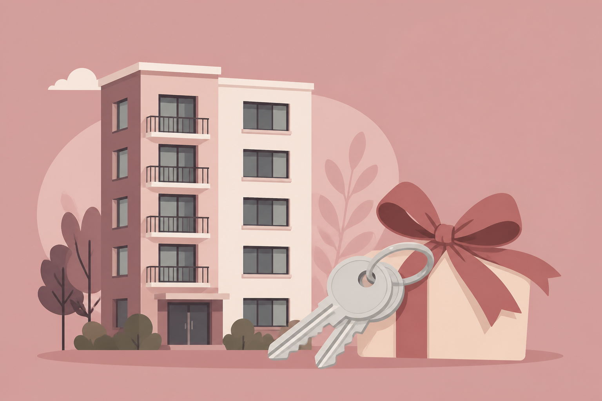

회사소개
세무서비스
세무기장
컨설팅
더낸세금
PANTAX.ai
블로그
로그인
상담 신청하기
회사소개
세무서비스
세무 기장
컨설팅
경정청구(더낸세금)
PANTAX.ai
블로그
알아두면 돈이 되는 필수 정보들
실시간 인기 콘텐츠
더 보기
가족 간 증여세 면제 한도, 2026년 기준 총정리
현금 입금·계좌이체 세무조사, 2026년 실제 사례와 대처법
2026 소상공인을 위한 3대 정부 지원
기장 맡기기 전 세무사에게 꼭 해야하는 질문
경리대행, 세무기장, 신고대리 차이는? 업무 범위와 선택 기준
Interview | 김판기 세무사
경정청구, 언제 다시 보면 될까
스타트업이 첫 기장 사무소를 고를 때
세무에 관한 모든 정보와 노하우
세무 이야기
더 보기

아파트 증여세 완벽 정리 2026 | 취득세·절세법·조정대상지역까지
중소기업 취업자 소득세 감면, 얼마나 받을 수 있나요?
육하원칙 세무: 생애 첫 세무기장의 시작
세무조정료, 왜 내야 할까?
종합소득세 기한 후 신고, 가산세 감면 어떻게 받나요?
부가세 신고 전에 대표가 확인할 세 가지
판기세무회계의 소식과 유용한 사업 팁
판기세무회계 이야기
더 보기
부천 세무사가 IT로 기장 업무를 바꾼 이유
카카오톡으로 끝나는 세무, 소규모 사업장에서 먼저 퍼지다
경정청구·지원금까지 한 화면에서 보는 세무 리포트
가상비서로 세무업무를 단순화한 부천 세무사무소
Interview | 김판기 대표 세무사
절세와 지원금을 함께 챙기는 세무 서비스